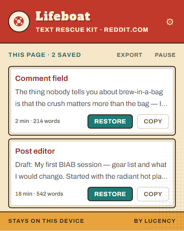
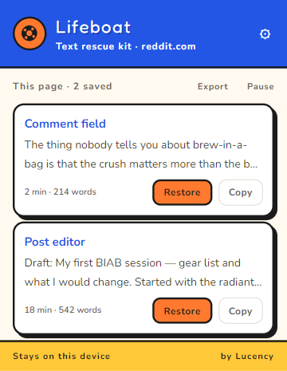
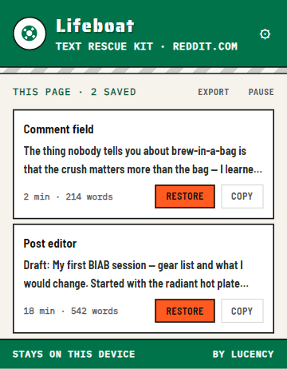
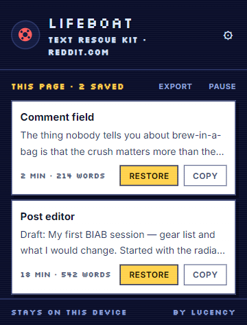
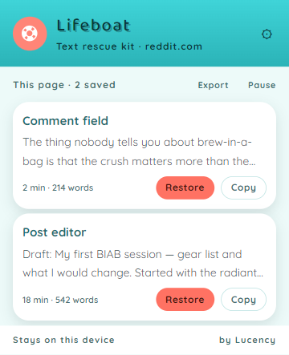

Your text rescue kit for Chrome
The page wiped it.
Bring it back.
The comment, the application, the three paragraphs you just wrote. Lifeboat saves your text on this device so a broken page doesn't have to mean starting over.
Free rescue. No account. No subscription.
Install before the loss. Lifeboat can only bring back text it has already saved.
Interactive simulation
Imagine the site clears this comment. Wipe the sample, then bring it back.
Only this sample changes, in page memory. No personal input, saved data or extension detection. Test Lifeboat, a test inside the extension, is coming in v1.0.2. For the current version, use the manual sample check.
The free defaults keep it useful and tidy.

Keep writing. Keep a way back.
A small kit for a very familiar problem.
Install, then write as usual
Lifeboat saves text from supported comment boxes, applications and editors as you type. You don't need to copy it first.
The page loses your draft
A timeout, an unexpected refresh, a trip back to an empty form. When Lifeboat recognises the lost field, a rescue card offers your saved text.
Put your words back
Choose Restore, or open the popup to browse saved drafts and earlier versions. If the field changed, Copy gives you a way to paste the text yourself.
Lifeboat protects typed text. It doesn't track your clipboard, save uploaded files or back up an entire browser session.
Yes, a text saver records your typing.
Here's exactly what stays saved.
The text you type into supported fields stays in your Chrome profile, encrypted on your device with AES-GCM.
No draft cloud, no telemetry, no account for free rescue. You can see saved drafts, export your text, or pause saving for a site. Coming in v1.0.2: delete a draft or a site's drafts, with an undo option.
Read the full privacy policy →Some fields are excluded
Password fields, and fields identified as payment or national-ID inputs, are excluded using their type, labels and other field information. That cannot identify every secret typed into an ordinary comment box. Pause on a site when you don't want its text saved.
Saved text has an expiry date
Free Lifeboat keeps up to three versions per field for seven days. A draft starts saving at 25 characters. Pro lets you change those limits.
Pro has one outside connection
When you activate Pro, and during periodic licence checks, Lifeboat sends your licence key and organisation/activation identifiers to Polar. It never sends your draft text.
Free rescue. Optional extras.
Keep the kit.
Pick your boat.
Restoring your text is free. Pro is a one-time supporter pack with four more looks and a few ways to make Lifeboat yours.
Lifeboat
Free
The text rescue kit, ready to use.
- Save, restore, copy and export your text
- Browse earlier versions
- Draft deletion and undo, coming in v1.0.2
- Pause on any site and choose the rescue card's corner
- Tin Toy theme, 7 days, 3 versions, 25-character minimum
Lifeboat Pro
$3.99 once
Everything free, plus the supporter extras.
- Dinghy, Muster, Arcade and Pool Float themes
- Keep drafts for 3–30 days and 1–10 versions
- Set the save minimum from 1–200 characters
- Private saved-and-restored counts in the Ship's Log
One payment through Polar. Activate the licence key inside Lifeboat.




Real product screenshots with example drafts. Preview the boats in the extension before buying.
The recovery shelf
Find your way back.
What to try when the text is already gone, and what to set up for next time.
Before you install
A few fair questions.
Can it recover something I already lost?
Only if Lifeboat was installed, active on that site, and had saved that text before the loss. Installing it now cannot recover an old unsaved draft. Start with our crash recovery guide for the things you can still check.
Will it work in every text box?
No text saver works in every editor. Lifeboat supports ordinary text fields and many rich editors, including React-controlled fields and web components. Chrome's internal pages and the Chrome Web Store cannot be captured. Check important sites with harmless sample text first; when direct restore isn't possible, try Copy in the popup.
How do I check that it's working?
In the current version, type a harmless sample paragraph into a disposable field on a site you trust. Wait a few seconds, then open Lifeboat and confirm the sample appears in the popup. Only after that, reload the disposable test page and try Restore or Copy. Keep real work out of the test.
Test Lifeboat, coming in v1.0.2, will open a sample test inside the extension from the popup. The simulation on this website shows the idea but does not test your installation.
Is this a clipboard manager?
No. Lifeboat saves text you type into supported website fields, without needing you to copy it. It does not monitor clipboard history. Its Copy button is simply another way to get a saved draft back.
Do I need Pro to get my words back?
No. Saving, restoring, copying and exporting drafts are free. Pro adds themes, configurable saving limits and private rescue counts for a one-time payment.
Next draft, bring a lifeboat.
Install before you start writing. Rescue is free.